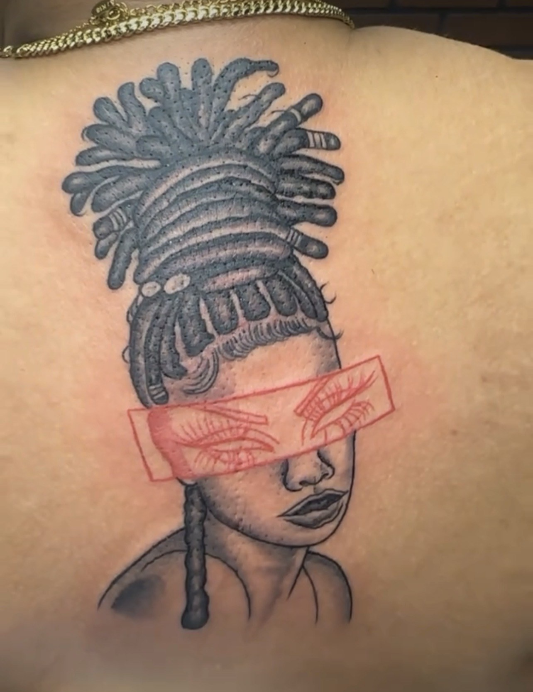
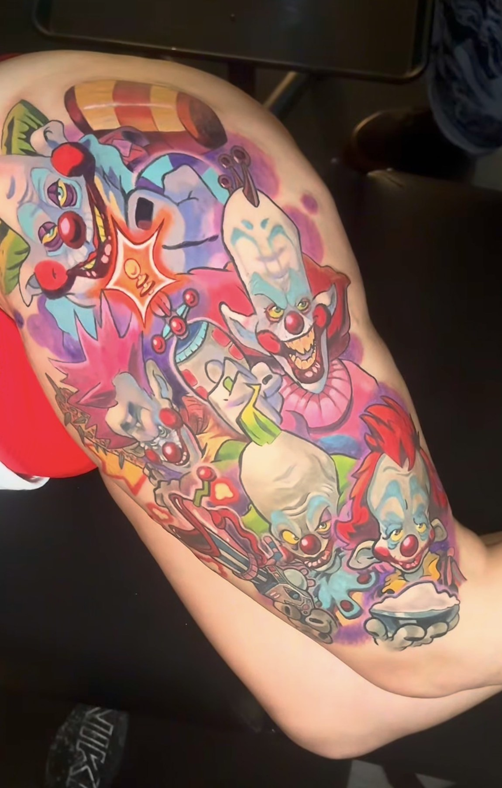

SUPPORTING PROJECT / WEB DESIGN & DEVELOPMENT
LANI VEX.
Soft petals. Sharp edges. A tattoo website with a point of view.
A fictional brand concept designed and developed by Ashelic Rose.
EXPLORE THE WEBSITE ↗


Visual direction references / Tattoo artwork and photography by independent artists. Individual credits pending.
Behind the design
I created Lani Vex as an independent concept to explore how a tattoo website can carry the same personality as the art it presents. The direction draws from local tattoo culture: expressive florals, detailed black-and-grey work, anime, and vivid color.
My contribution is the website concept, visual identity, interface design, and front-end development. The featured tattoo photographs are reference material, not tattoos I created or work by a real artist named Lani Vex.
The visual language
Deep navy backgrounds frame the photography. Electric-blue headings and acid-green accents bring a cool, high-energy identity to the gallery. Oversized type, numbered captions, and a handwritten underline bring a direct, expressive feel.
#07131FBLUE
#69B7FFACID GREEN
#B6ED63
Built to explore
The responsive gallery groups 13 references into four styles. Each photo opens at full size. The sample inquiry includes reference-file selection, required-field validation, and an accessible preview dialog.
Keyboard navigation, visible focus states, descriptive image text, and reduced-motion support are included. The form does not transmit or store submissions.
VIEW THE GALLERY ↗Project credits
Website: Ashelic Rose / Taste My Nightmare.
Brand: Lani Vex, fictional concept.
Tattoo images: Independent artists; names and image-by-image credits to be supplied. No affiliation or endorsement is implied.